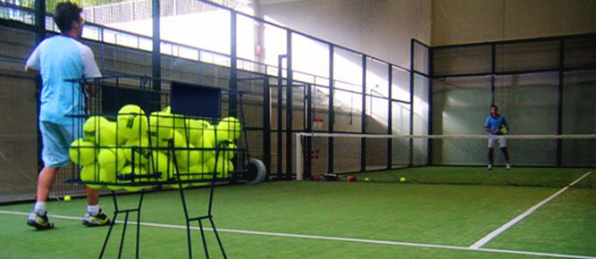
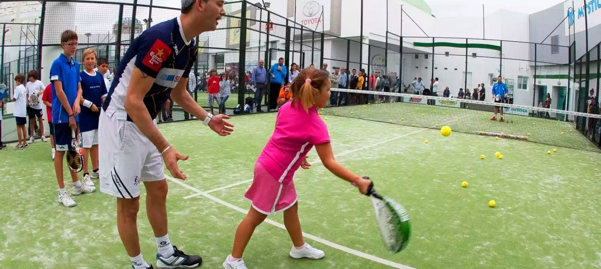

Pádel U.P.M.
El club universitario más dinámico del circuito
El club universitario más dinámico del circuito
En el Club de Pádel UPM ofrecemos diferentes opciones de clases de pádel para todos los niveles. Si quieres aprender a jugar al pádel en un entorno único y con los mejores profesionales, este es tu sitio. Además, estamos a tan solo 5 minutos de Moncloa. ¡Contacta con nosotros para saber más!
El monitor de pádel estará disponible para ofrecerte una enseñanza totalmente personalizada, adaptándose al horario que te venga bien. Si buscas una progresión continua e intensa, ¡está es tu mejor opción!
Aprovecha las magníficas instalaciones del Club para organizar torneos y eventos. Disponemos de un área en la que poder organizar en las mejores condiciones, desde un torneo de empresa, una convención o clinic deportivo.
